2026-10-19：真实主程序重做
根据所有者对首轮实现的退回意见，重建标题、新局准备、紧凑HUD和统一窗口，保留真实规则、AI、存档和离线系统。下面为生产构建的真实 Chromium 截图，区别于下方历史示例。

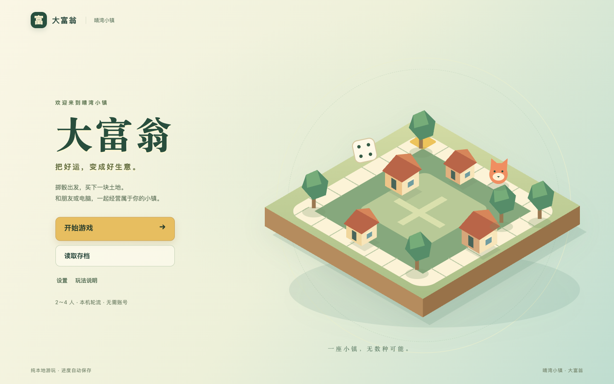
独立标题画面
主菜单具有完整样式，默认开始／继续游戏，存档与设置各有入口。
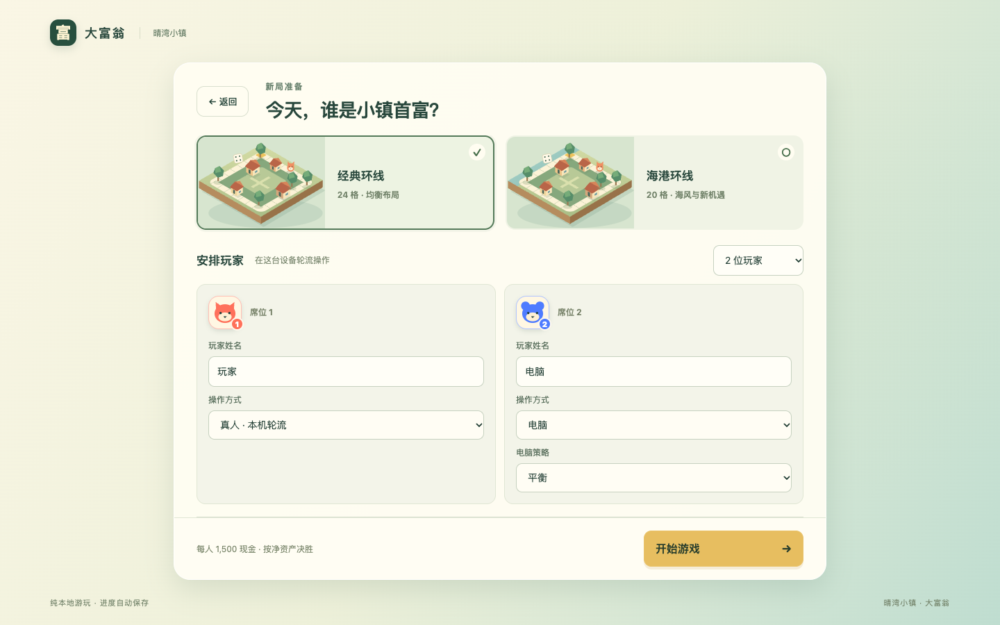
准备一场真实对局
姓名、真人／电脑、策略直接可见，支持2～4席；开始操作固定可达。
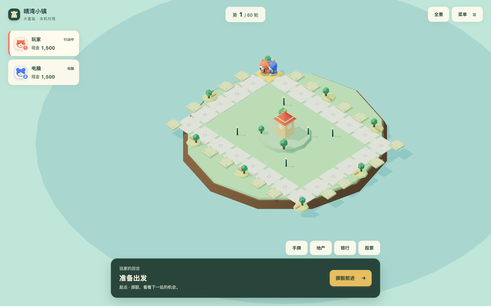
棋盘与当前行动
移除旧侧栏样式链，默认全景按HUD实测占位构图。
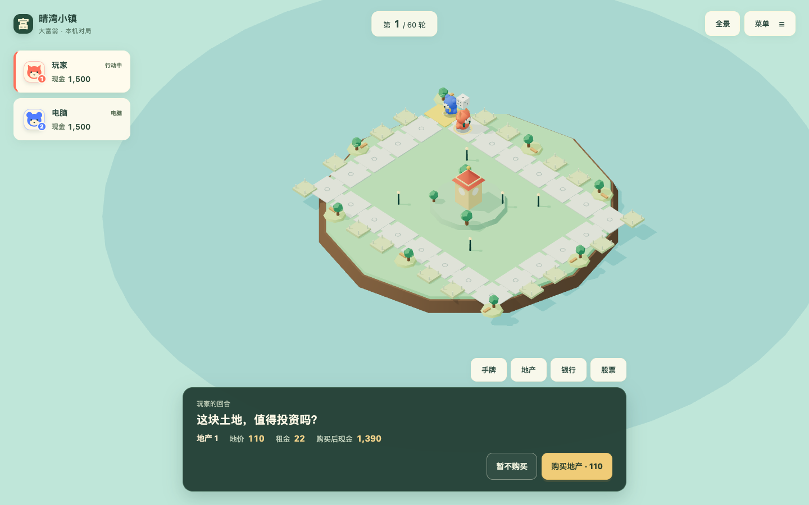
完整的到访决策
购地的后果直接可读；到访自有地时同处显示建造／升级。
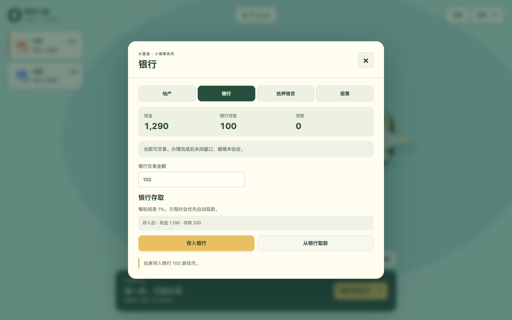
真正独立的金融窗口
统一原生模态隔离背景输入，支持键盘关闭与焦点恢复。
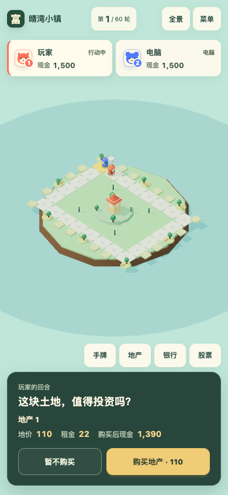
窄屏也保留两项选择
桌面Chromium手机视口，不能代替真机GPU和触摸验收。首轮实现的真实退化证据
以下来自本轮修改前的dev@3ca88d0实测，保留失败记录，避免把旧测试通过冒充良好体验。

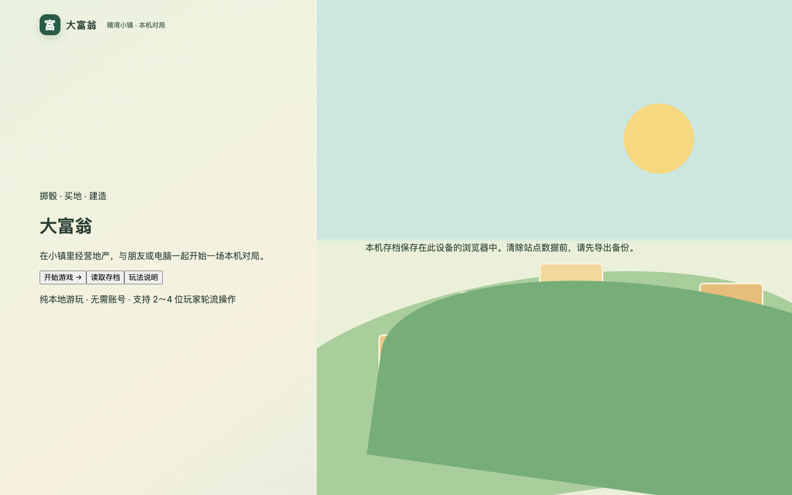

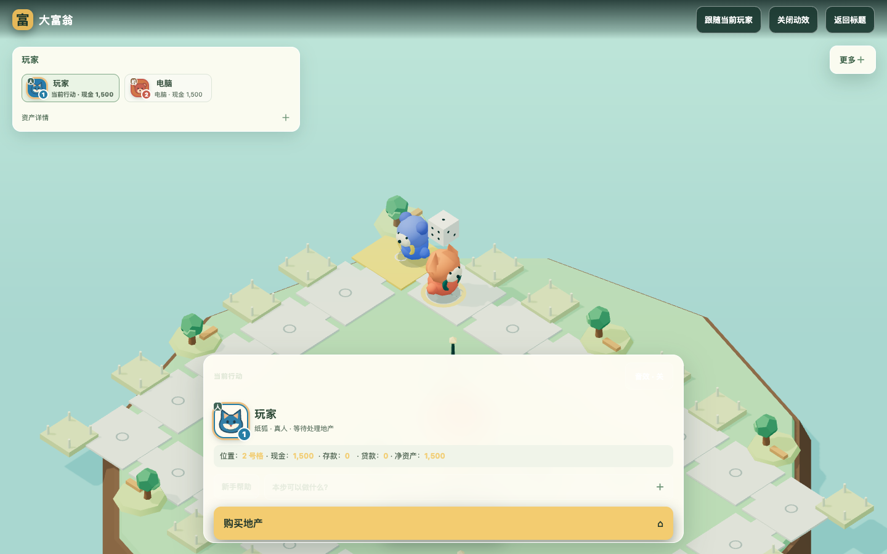
原四状态设计参考 · 2026-10-18

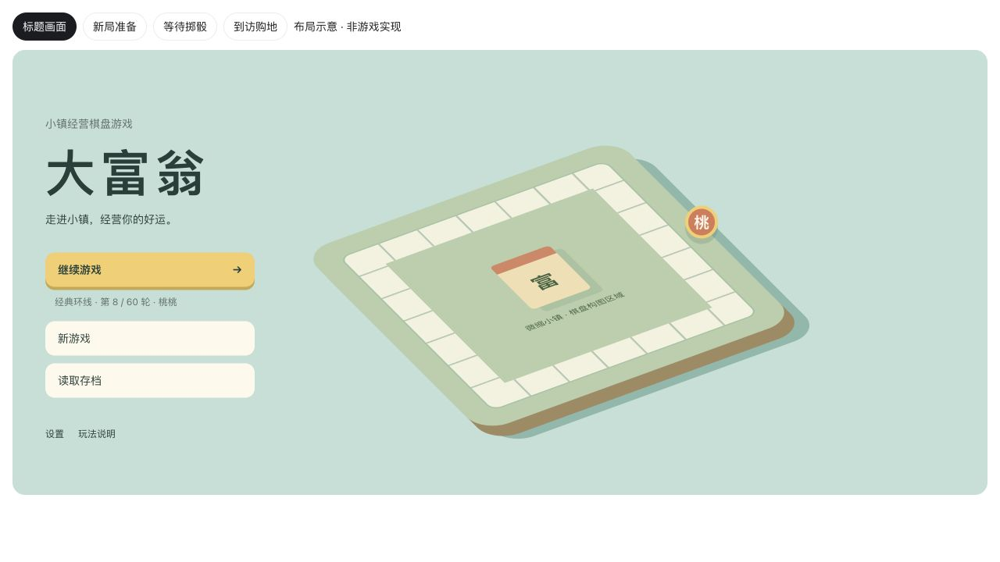
标题画面
清楚的游戏身份与主菜单。没有开局表单、资产报表、金融与选地工具；有存档时优先继续游戏。
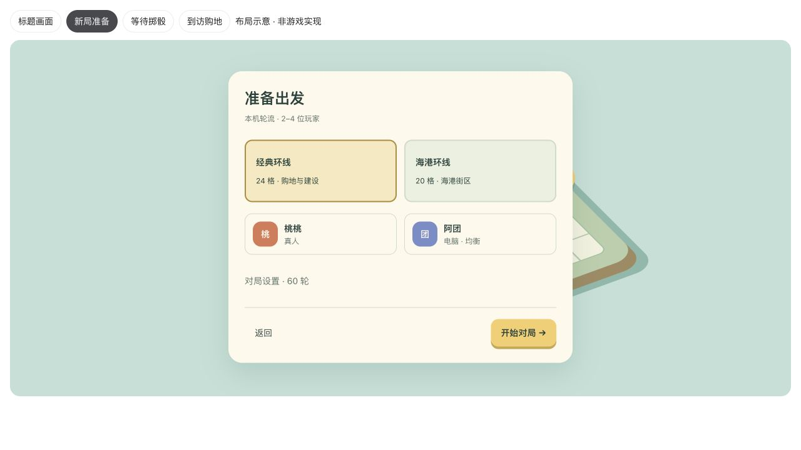
新局准备
地图与席位组织成游戏准备流程，复杂设置进入次级页面。正式实现保留2～4人和已有配置能力。
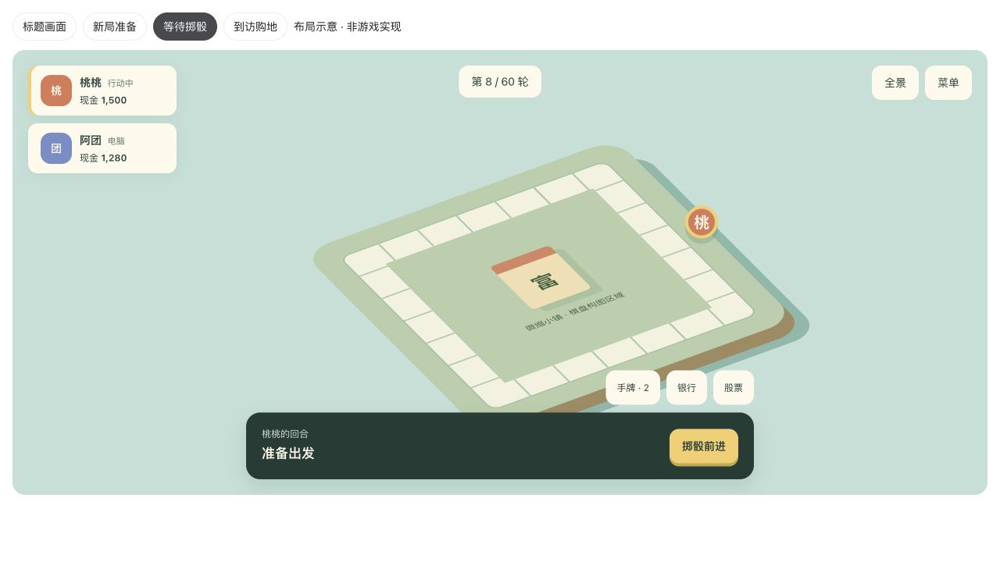
等待掷骰
玩家状态稳定、操作集中。底部主操作只负责当前一步，不再承担一个不断增长的金融工作台。
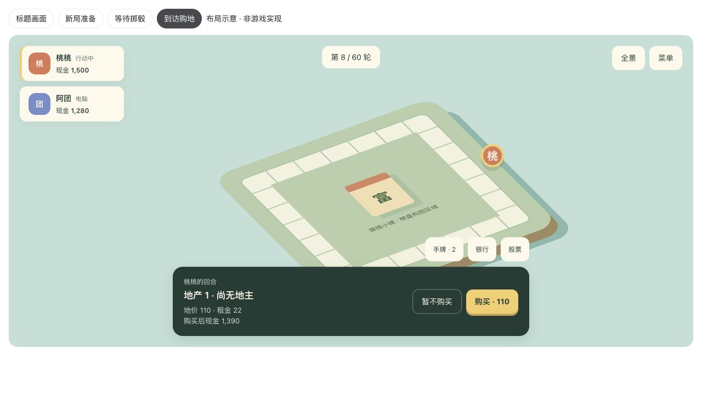
到访购地
行动区变为明确的购买决策。地价、租金与余额变化可见；真实游戏中应在行走结束后才开放。继续查看交互关系
可切换上方四个状态；查看主菜单、资产、银行、股票、手牌等面板。示例用于讨论布局和层级，不用于测试经济规则或动画正确性。
面板和手机宽度

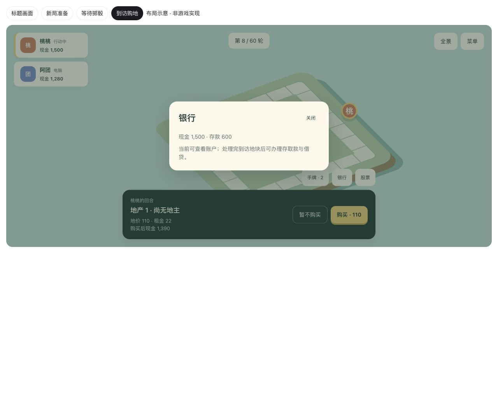
独立金融面板
复杂内容有自己的空间，退出后回到当前决策。到访未处理时可查看，交易提交必须等合法阶段。
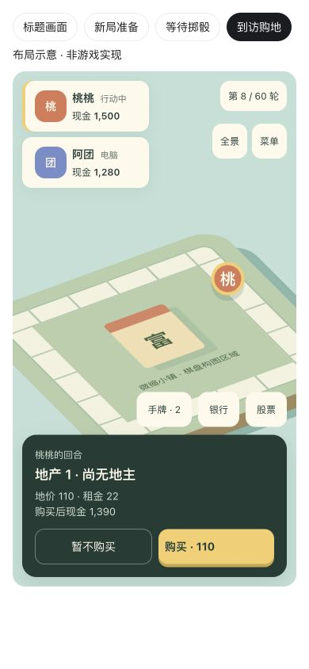
手机购地状态
当前操作保持可达，复杂窗口可转为底部弹层或全屏。这是桌面浏览器390×844视口截图，不是真机GPU或触摸验收。问题来源：改造前的主程序
以下两幅是所有者提供的原始截图，不是后期仿制。完整问题分析见文字方案第2部分。

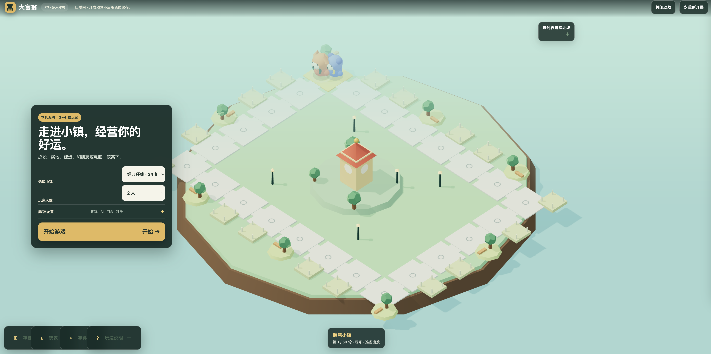
原开始界面
开始界面像贴在棋盘上的网页设置表单，游戏阶段与对局工具没有真正分离。
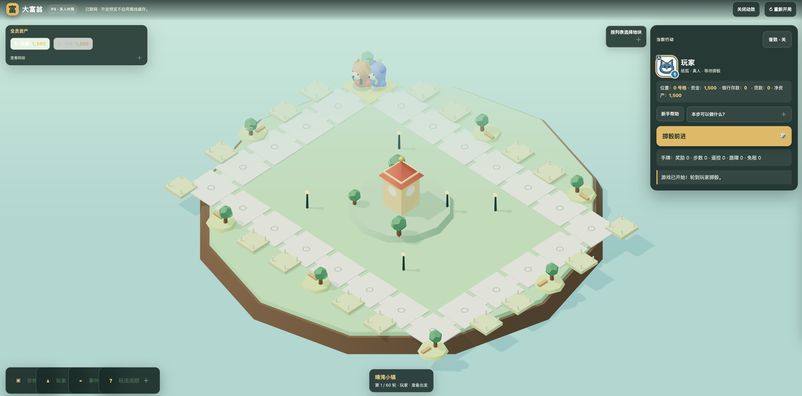